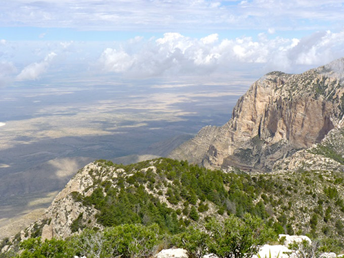
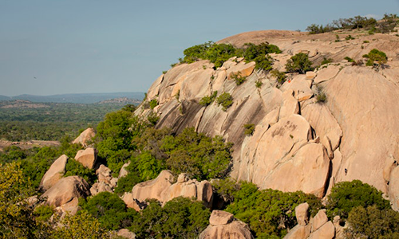
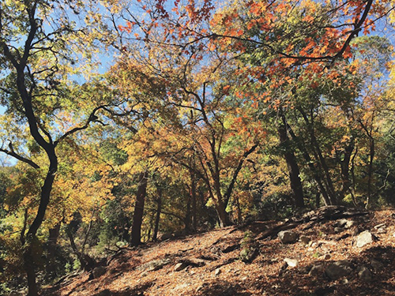
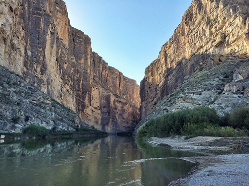
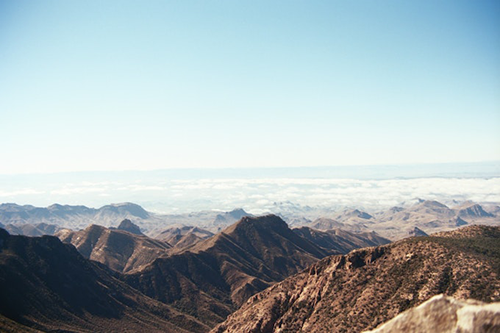
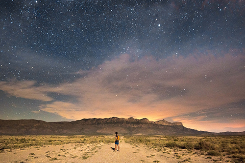
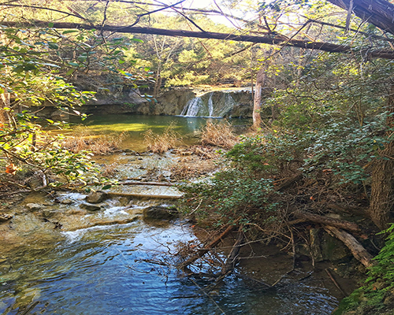
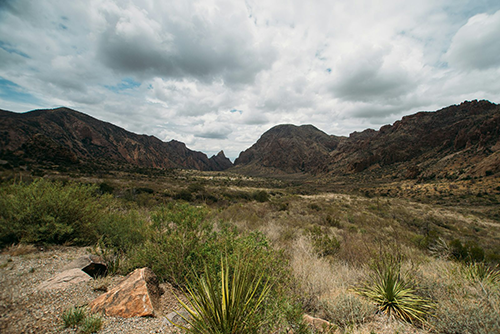
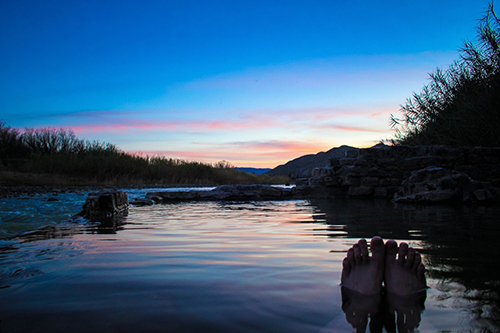
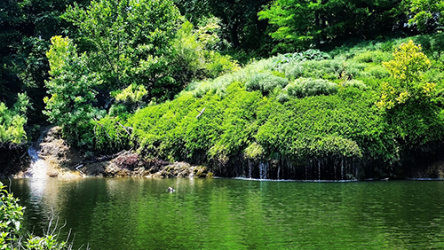

Hikes Needed to Complete in Texas
These hiking trails range from swimming holes to epic summit views. The following 10 places are for those wanting an all-day hike or just a hike to breath some fresh air.
Guadalupe Peak
- Distance: 8.15 miles
- Elevation: 2,867 feet
- Type: out-and-back
Texas' highest mountain offers stunning views of the desert and forests. Though the climb to 8,751 feet is a strenuous 4.2 miles, you will be rewarded with breathtaking views of Texas' main ecosystems.
Enchanted Rock
- Distance: 11 miles
- Elevation: 344 feet
- Type: loop
Enchanted Rock is a short drive from Fredericksburg. It boasts a pink granite dome in Central Texas. There are multiple hiking trails to follow as you take in the wonderful rock formations.
Lost Maples State Natural Area
- Distance: 10 miles
- Elevation: 1,000 feet
- Type: loop
Lost Maples State Natural Area is two hours from San Antonio and is marvelous year-round. It has abundant wildflowers, steep canyons, and the scenic Sabinal River. You can explore for the day or spend a few days at the campsite.
Emory Peak at Big Bend National Park
- Distance: 9.44 miles
- Elevation: 2,401 feet
- Type: out-and-back
Emory Peak's climb to the stop is a grueling hike along a dirt and rocky trail. The 360-degree views of Big Bend are amazing, but you will notice an antenna that serves as Big Bend's two-way radio system.
Santa Elena Canyon - Big Bend
- Distance: 1.66 miles
- Elevation: 610 feet
- Type: out-and-back
Santa Elena Canyon is the crown jewel of Big Bend National Park. Temperatures rise even in the canyon's shade, but the view of the towering walls will still your breath. The hike allows you to encounter the famous Rio Grande.
Gypsum Sand Dunes - Guadalupe Mountains NP
- Distance: 3.01 miles
- Elevation: 50 feet
- Type: out-and-back
Gypsum Sand Dunes offers the most stunning views of Guadalupe Peak and El Capitan mountains. They are full of easy terrain and majestic views.
Wild Basin Wilderness Preserve
- Distance: 1.8 miles
- Elevation: 262 feet
- Type: loop
Wild Basin Preserve is located in the beautiful Hill Country. The breathtaking view of nature makes it hard to believe how close the city is to Austin.
Window Trail - Big Bend
- Distance: 4.2 miles
- Elevation: 500 feet
- Type: out-and-back
The Window Trails allow hikers to view Mexico. They are adaptable for all hikers and can be done within a couple of hours. The panoramic views are lovely.
Boquillas Hot Springs
- Distance: 1 miles
- Elevation: 0 feet
- Type: loop
Boquillas is a geothermal hot springs located on the Rio Grande. The temperature is 105 degrees year-round. The springs boast a beautiful view.
Crockett Garden and Falls
- Distance: 7.69 miles
- Elevation: 0 feet
- Type: out-and-back
Crockett Gardens and Falls is located at Lake Georgetown. This scenic hike contains cliffs, natural springs, and small waterfalls.